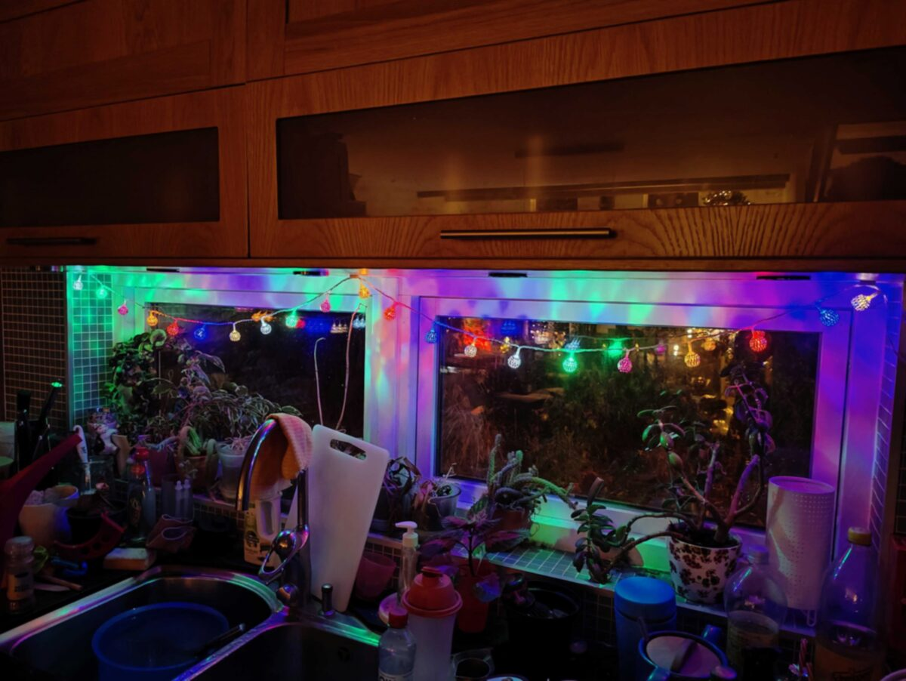
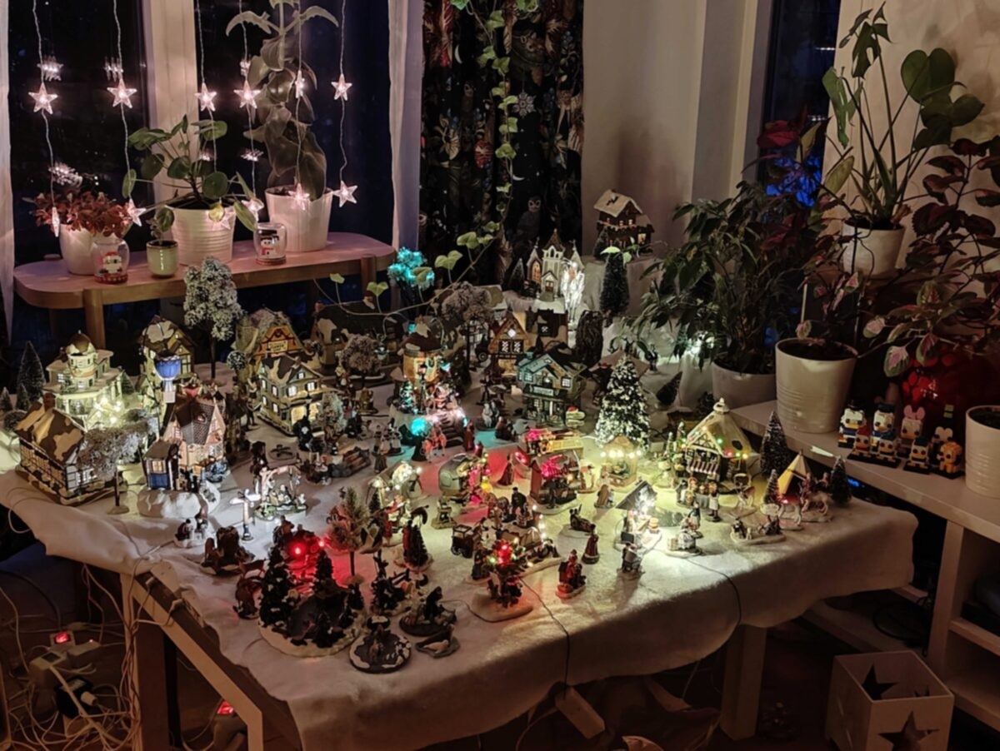
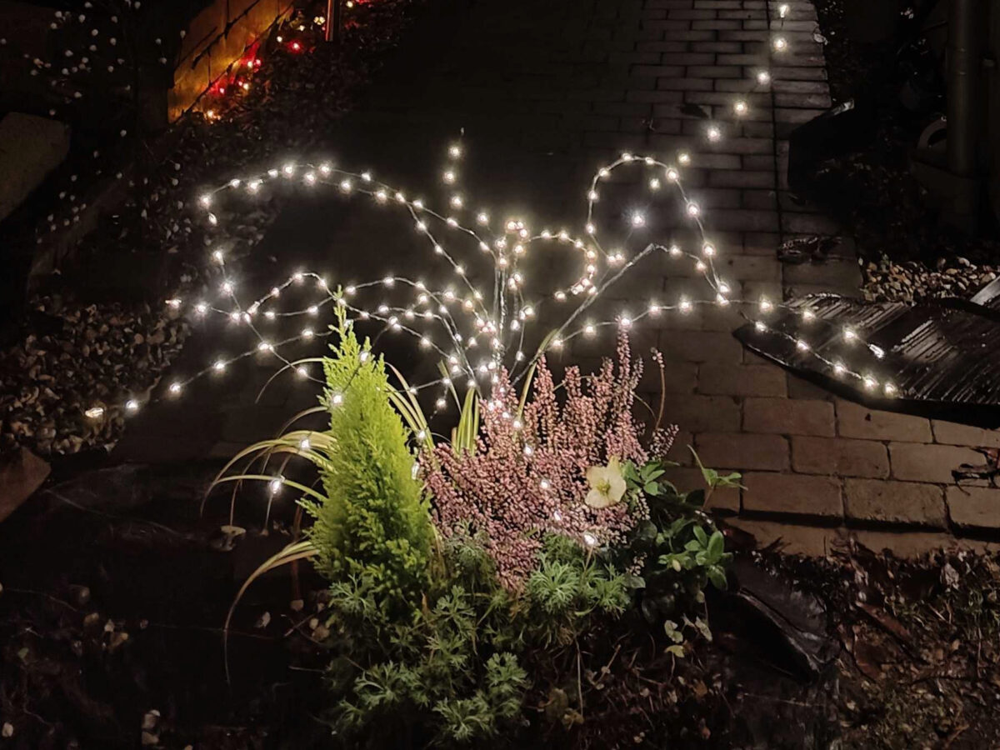
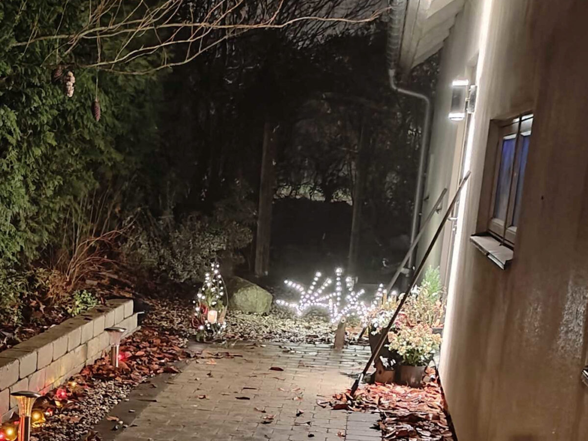
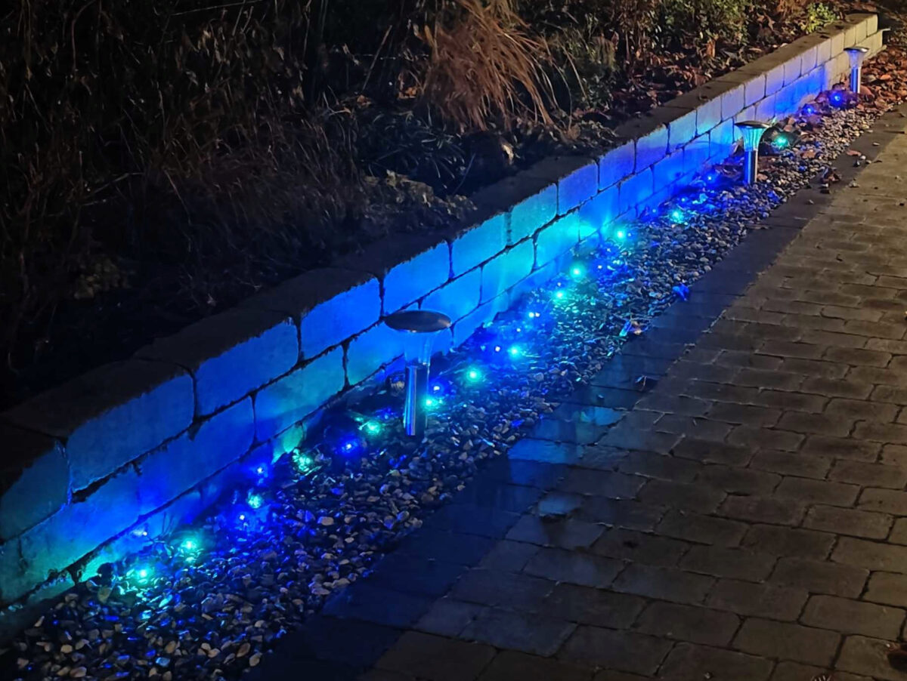
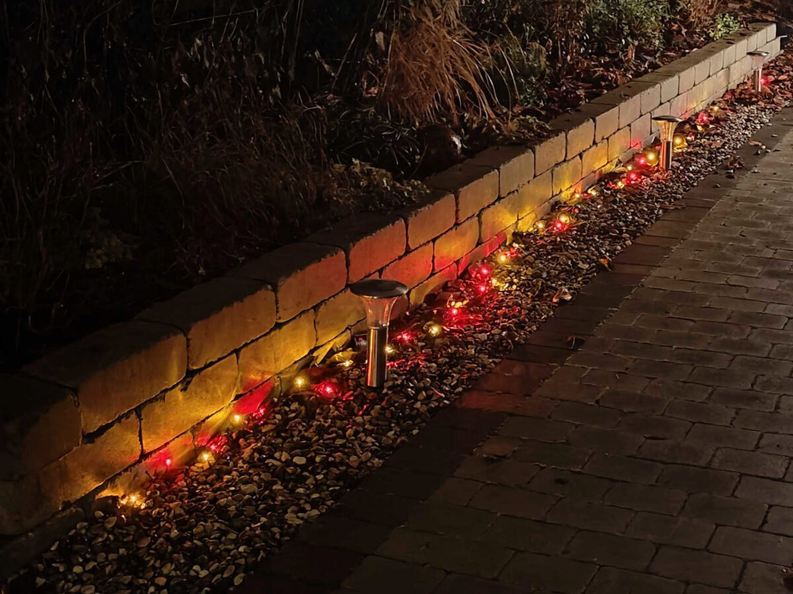
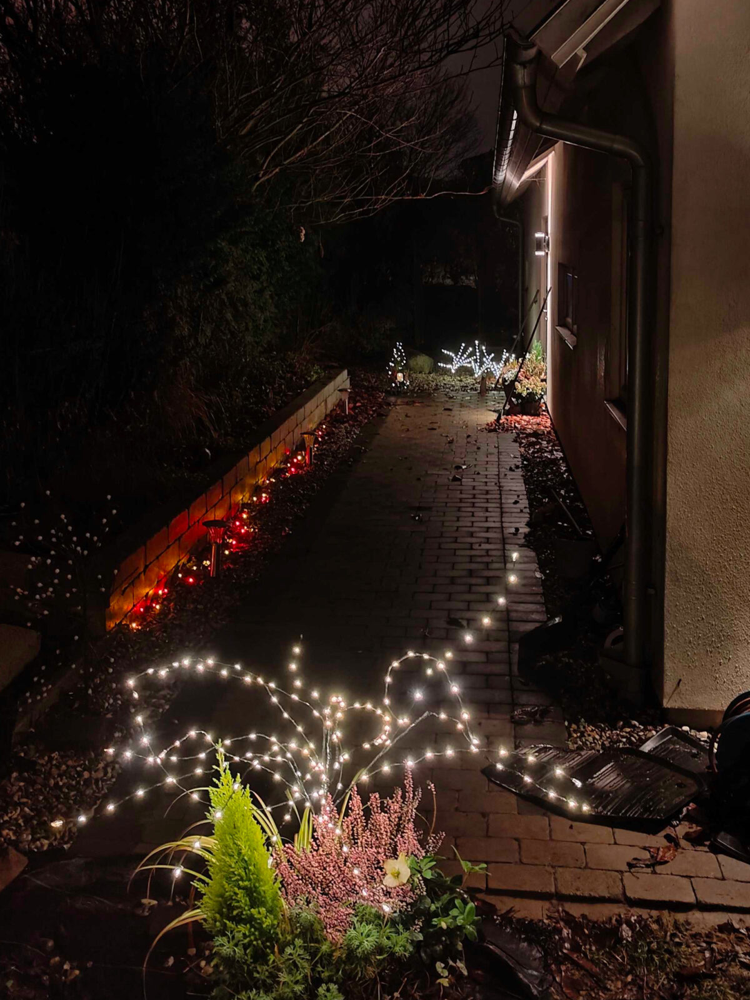

Ha en bra onsdag!
Inomhus har vi satt upp lite mer julbelysning
Och vår julby
Utomhus har vi också ljus
Denna kruka står ute vid bilen
Vid dörren står några ljusgrenar
Och en ljusslinga som kan vara blå/grön
eller röd/gul
Så här ser det ut
